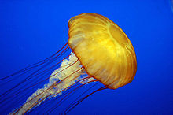

This article is about the aquatic animal-form. For similar animals, see gelatinous zooplankton. For other uses, see Jellyfish (disambiguation).
Jellyfish or jellies are softbodied, free-swimming aquatic animals with a gelatinous umbrella-shaped bell and trailing tentacles. The bell can pulsate to acquire propulsion and locomotion. The tentacles may be utilized to capture prey or defend against predators by emitting toxins in a painful sting. Jellyfish species are classified in the subphylum Medusozoa which makes up a major part of the phylum Cnidaria, although not all Medusozoa species are considered to be jellyfish.
Jellyfish are found in every ocean, from the surface to the deep sea. Scyphozoans (the "true jellyfish") are exclusively marine, and some hydrozoans with a similar appearance live in freshwater. Large, often colorful, jellyfish are common in coastal zones worldwide. Jellyfish have roamed the seas for at least 500 million years, and possibly 700 million years or more, making them the oldest multi-organ animal.
The popular English name jellyfish has been in use since 1796. It has traditionally also been applied to other animals sharing a superficial resemblance, for example ctenophores (members from another phylum of common, gelatinous and generally transparent or translucent, free-swimming planktonic carnivores now known as comb jellies) were included as "jellyfishes". Even some scientists include the phylum ctenophora when they are referring to jellyfish. Other scientists prefer to use the more all-encompassing term gelatinous zooplankton, when referring to these, together with other soft-bodied animals in the water column.
As jellyfish are not true fish, which are vertebrates, the word jellyfish is considered by some to be a misnomer. Public aquaria often use the terms jellies or sea jellies instead. The term "jellies" may have become more popular than "jellyfish". In scientific literature, "jelly" and "jellyfish" are often used interchangeably. Some sources may use the term "jelly" to refer to organisms in this taxon, as "jellyfish" may be considered inappropriate.
Many textbooks and sources refer to only scyphozoans as "true jellyfish".
A group of jellyfish is sometimes called a bloom or a swarm. "Bloom" is usually used for a large group of jellyfish that gather in a small area, but may also have a time component, referring to seasonal increases, or numbers beyond what was expected. Other collective names for a group of jellyfish are "fluther" and "smack," though neither term is commonly used by scientists who study jellyfish. Jellyfish are "bloomy" by nature of their life cycles, being produced by their benthic polyps usually in the spring when sunshine and plankton increase, so they appear rather suddenly and often in large numbers, even when an ecosystem is in balance. Using "swarm" usually implies some kind of active ability to stay together, which a few species such as Aurelia, the moon jelly, demonstrate.
Medusa jellyfish may be classified as scyphomedusae ("true" jellyfish), stauromedusae (stalked jellyfish), cubomedusae (box jellyfish), or hydromedusae, according to which clade their species belongs.
Most jellyfish do not have specialized digestive, osmoregulatory, central nervous, respiratory, or circulatory systems. The manubrium is a stalk-like structure hanging down from the centre of the underside, often surrounded by oral arms, which connects with the mouth/anus at the base of the bell. This opens into the gastrovascular cavity, where digestion takes place and nutrients are absorbed. It is joined to the radial canals which extend to the margin of the bell, where tentacles are attached. Nematocysts, which deliver the sting, are located mostly on the tentacles; scyphozoans also have them around the mouth and stomach. Jellyfish do not need a respiratory system since their skin is thin enough that the body is oxygenated by diffusion. They have limited control over movement, but can use their hydrostatic skeleton to navigate through contraction-pulsations of the bell-like body; some species actively swim most of the time, while others are mostly passive. Depending on the species, the body contains between 95 and 98% water. Most of the umbrella mass is a gelatinous material — the jelly — called mesoglea which is surrounded by two layers of protective skin. The top layer is called the epidermis, and the inner layer is referred to as gastrodermis, which lines the gut
Jellyfish employ a loose network of nerves, located in the epidermis, which is called a "nerve net". Although traditionally thought not to have a central nervous system, nerve net concentration and ganglion-like structures could be considered to constitute one in most species. A jellyfish detects various stimuli including the touch of other animals via this nerve net, which then transmits impulses both throughout the nerve net and around a circular nerve ring, through the rhopalial lappet, located at the rim of the jellyfish body, to other nerve cells.
Some jellyfish have ocelli: light-sensitive organs that do not form images but which can detect light and are used to determine up from down, responding to sunlight shining on the water's surface. These are generally pigment spot ocelli, which have some cells (not all) pigmented. Certain species of jellyfish, such as the box jellyfish, have more advanced vision than their counterparts. The box jellyfish has 24 eyes, two of which are capable of seeing color, and four parallel information processing areas or rhopalia that act in competition, supposedly making it one of the few creatures to have a 360-degree view of its environment.
The eyes are suspended on stalks with heavy crystals on one end, acting like a gyroscope to orient the eyes skyward. They look upward to navigate from roots in mangrove swamps to the open lagoon and back, watching for the mangrove canopy, where they feed.
Jellyfish range from about one millimeter in bell height and diameter to nearly 2 metres (6.6 ft) in bell height and diameter; the tentacles and mouth parts usually extend beyond this bell dimension. The smallest jellyfish are the peculiar creeping jellyfish in the genera Staurocladia and Eleutheria, which have bell disks from 0.5 mm to a few millimeters in diameter, with short tentacles that extend out beyond this, which these jellyfish use to move across the surface of seaweed or the bottoms of rocky pools. Many of these tiny creeping jellyfish cannot be seen in the field without a hand lens or microscope; they can reproduce asexually by splitting in half (called fission). Other very small jellyfish, which have bells about one millimeter, are the hydromedusae of many species that have just been released from their parent polyps; some of these live only a few minutes before shedding their gametes in the plankton and then dying, while others will grow in the plankton for weeks or months. The hydromedusae Cladonema radiatum and Cladonema californicum are also very small, living for months, yet never growing beyond a few mm in bell height and diameter. Another small species of jellyfish is the Australian Irukandji, which is about the size of a fingernail.
The lion's mane jellyfish, Cyanea capillata, was long-cited as the largest jellyfish, and arguably the longest animal in the world, with fine, thread-like tentacles that may extend up to 36.5 metres (120 ft) long (though most are nowhere near that large). They have a moderately painful, but rarely fatal, sting. The increasingly common giant Nomura's jellyfish, Nemopilema nomurai, found in some, but not all years in the waters of Japan, Korea and China in summer and autumn is another candidate for "largest jellyfish", in terms of diameter and weight, since the largest Nomura's jellyfish in late autumn can reach 200 centimetres (79 in) in bell (body) diameter and about 200 kilograms (440 lb) in weight, with average specimens frequently reaching 90 centimetres (35 in) in bell diameter and about 150 kilograms (330 lb) in weight. The large bell mass of the giant Nomura's jellyfish can dwarf a diver and is nearly always much greater than the up-to-100 centimetres (39 in) bell diameter Lion's Mane.
The rarely encountered deep-sea jellyfish Stygiomedusa gigantea is another candidate for "largest jellyfish", with its thick, massive bell up to 100 centimetres (39 in) wide, and four thick, "strap-like" oral arms extending up to 6 metres (20 ft) in length, very different from the typical fine, threadlike tentacles that rim the umbrella of more-typical-looking jellyfish, including the Lion's Mane.